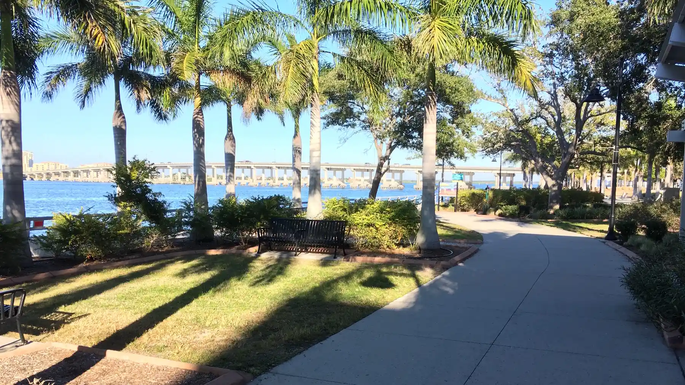

Central Bradenton
Downtown Bradenton and the Village of the Arts
Manatee County, Florida
Photo Sanibel sun, via Wikimedia Commons · CC BY-SA 4.0
Downtown Bradenton runs along the south bank of the Manatee River, with the Riverwalk connecting the waterfront and the cultural buildings that sit on it. Just south of it is the Village of the Arts, a neighborhood of small 1920s through 1940s cottages rezoned to allow residents to run galleries and studios out of their homes.
The two together are the part of the county that feels least like a subdivision, and the housing is correspondingly older and more varied.
- To the Beach
- About 20 minutes
- Typical Range
- [[FILL IN: pull from Stellar MLS]]
- What Was Built Here
- Bungalows, historic cottages, riverfront condominiums, live work
The Details
What defines Downtown Bradenton and the Village of the Arts.
- The Riverwalk, running along the Manatee River through downtown
- The Village of the Arts, zoned for live and work use
- The Bishop Museum of Science and Nature and the Manatee Performing Arts Center
- Riverfront condominium buildings with direct water views
- Housing stock largely from the 1920s through the 1940s
Questions
What people ask me about Downtown Bradenton and the Village of the Arts.
What does live and work zoning mean in the Village of the Arts?
The neighborhood carries a zoning overlay that permits residents to operate certain small businesses, most commonly galleries and studios, from their homes. The permitted uses and requirements are set by the city of Bradenton and are specific. If running a business from the property is part of your plan, we confirm the allowed use for that exact parcel with the city.
What should I expect from homes of this age?
Original wood frame construction, older electrical and plumbing, and often no central air in the earliest homes unless it has been added. Insurers look closely at roof, wiring, and plumbing on properties this old. Many have been renovated and many have not, and the difference between the two is substantial in both price and insurability.
Are the riverfront condominiums subject to the new inspection rules?
The taller buildings are. Florida milestone inspection and structural integrity reserve study requirements apply to condominium buildings three stories and above, and downtown has several. As anywhere, that makes the association budget, the reserve study, and the inspection report essential reading before an offer.
Nearby